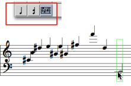
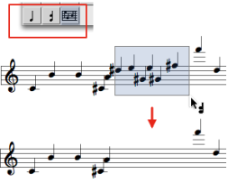
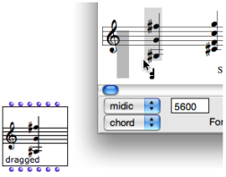
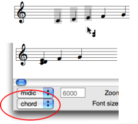
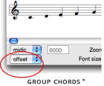
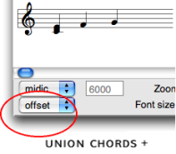

Editing Pitches
The tools of the editors palette define several hierarchic edition levels.
Note tool - to edit selected notes.
Chord tool - to edit whole chords.
 Voice tool
- more specifically dedicated to the
voice
object, can apply to a whole
chord-seq
.
Voice tool
- more specifically dedicated to the
voice
object, can apply to a whole
chord-seq
.
A whole object can be selected with a click and drag in any case .
Adding Notes and Chords
In note objects :
select the note tool
Cmdclick in the score.
The default or current value of the object is modified.
In chord objects :
select the chord tool or the note tool
Cmdclick in the staff to add a note.
Chords can be edited in the
chord-seq
editor, or in an internal chord window.
To edit a chord from a chord-seq window :
Select the chord tool and
Cmdclick on the chord : a grey note appears at the root of the green-framed chord.Change its pitch with the
↑or↓keys.Click in the editor window to validate.
To edit a chord in a
internal chordwindow :Select the note or the chord tool.
Double click on the chord : the
internal chordwindow pops up.Cmdclick on the staff to insert notes in the chord.
 |
|
|  |
 | Chord factory boxes can be dragged out of any type of score editor – but the note editor. To create a factory box :
It is materialized as a factory box. |
Group / Union Chords
The group and union chords commands allow to gather several chords into one chord.
On |  |
The group chords command allows to preserve the individual offsets of the chords.
|  |
The union chords command gathers several chords graphically and temporally in a same chord.
|  |
Displaying Modes
The Editor Control lower menu allows to modify the displaying of chords. Notes can be ordered according to their :
- pitch :
arp upandarp downmodes - order in the pitches list :
ordermode - offset :
offsetmode.
A small vertical line marks the starting point of the chord.